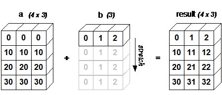

Numpy介绍#
NumPy(Numerical Python) 是 Python 语言的一个扩展程序库，支持大量的维度数组与矩阵运算，此外也针对数组运算提供大量的数学函数库。
为什么使用Numpy
由于Numpy的数组运算发生在GIL之外，并且其内部的数值计算都是用C语言编写，因此运算速度非常快。
在数据分析、机器学习、科学计算和工程等多个领域都有广泛应用，是很多此方面Python库（如下文介绍的SciPy和matplotlib）的基础。
提供了大量内建的便捷函数，方便进行数据操作。
ndarray对象的创建与元素访问#
NumPy最重要的一个特点是其N维数组对象 ndarray，它是一系列同类型数据的集合，以0下标为开始进行集合中元素的索引。ndarray对象是用于存放同类型元素的多维数组。ndarray对象可以进行切片操作，ndarray对象的访问方式与切片操作方式与列表类似。
我们可以使用numpy.array函数创建ndarray对象。除此之外，还有一些函数可以生成特定形式的ndarray对象.
import numpy as np #在使用numpy包之前，我们需要先导入包
a = np.array([1,2,3,4,5]) #创建1维数组
b = np.array([[1,2,3],[4,5,6]]) #创建2维数组
c = np.zeros((2,3)) #创建全0数组
d = np.eye(3) #创建3*3的单位矩阵
print("a = \n",a)
print("b = \n",b)
print("c = \n",c)
print("d = \n",d)
a =
[1 2 3 4 5]
b =
[[1 2 3]
[4 5 6]]
c =
[[0. 0. 0.]
[0. 0. 0.]]
d =
[[1. 0. 0.]
[0. 1. 0.]
[0. 0. 1.]]
import numpy as np
#观察3者区别
a = np.array([1,2,3,4,5])
b = np.array([1,2,3,4,5],dtype = float)
c = np.array([1,2,3,4,5],dtype = complex)
print("a = \n",a)
print("b = \n",b)
print("c = \n",c)
a =
[1 2 3 4 5]
b =
[1. 2. 3. 4. 5.]
c =
[1.+0.j 2.+0.j 3.+0.j 4.+0.j 5.+0.j]
import numpy as np
#元素访问与切片操作展示
a = np.array([1,2,3,4,5])
b = np.array([[1,2,3],[4,5,6]])
c = np.arange(1,4,1)
print("a[1] =",a[1])
print("a[1:3] =",a[1:3])
print("b[0,1] =",b[0,1])
print("b[1,0] =",b[1,0])
print("b[0:2,0:2] =\n",b[0:2,0:2])
print("c =",c)
print("a[c] =",a[c])
a[1] = 2
a[1:3] = [2 3]
b[0,1] = 2
b[1,0] = 4
b[0:2,0:2] =
[[1 2]
[4 5]]
c = [1 2 3]
a[c] = [2 3 4]
Numpy算数函数与数学函数#
NumPy算术函数包含简单的加减乘除: add，subtract，multiply和divide，分别对应操作符+，-，*，/。同时NumPy包含大量的各种数学运算的函数，包括三角函数，算术运算的函数，复数处理函数等。
import numpy as np
a = np.array([[2,4,6],[8,10,12]])
b = np.array([[1,2,3],[4,5,6]])
print('a+b =\n', np.add(a,b))
print('a-b =\n', np.subtract(a,b))
print('a*b =\n', np.multiply(a,b))
print('a/b =\n', np.divide(a,b))
print('a+b =\n', a + b)
print('a-b =\n', a - b)
print('a*b =\n', a * b)
print('a/b =\n', a / b)
a+b =
[[ 3 6 9]
[12 15 18]]
a-b =
[[1 2 3]
[4 5 6]]
a*b =
[[ 2 8 18]
[32 50 72]]
a/b =
[[2. 2. 2.]
[2. 2. 2.]]
a+b =
[[ 3 6 9]
[12 15 18]]
a-b =
[[1 2 3]
[4 5 6]]
a*b =
[[ 2 8 18]
[32 50 72]]
a/b =
[[2. 2. 2.]
[2. 2. 2.]]
import numpy as np
a = np.array([[2,4,6],[8,10,12]])
print('a^2 =\n', np.square(a))
print('sin(a) =\n', np.sin(a))
print('cos(a) =\n', np.cos(a))
print('sin(a*pi) =\n', np.sin(a*np.pi))
print('cos(a*pi) =\n', np.cos(a*np.pi))
a^2 =
[[ 4 16 36]
[ 64 100 144]]
sin(a) =
[[ 0.90929743 -0.7568025 -0.2794155 ]
[ 0.98935825 -0.54402111 -0.53657292]]
cos(a) =
[[-0.41614684 -0.65364362 0.96017029]
[-0.14550003 -0.83907153 0.84385396]]
sin(a*pi) =
[[-2.44929360e-16 -4.89858720e-16 -7.34788079e-16]
[-9.79717439e-16 -1.22464680e-15 -1.46957616e-15]]
cos(a*pi) =
[[1. 1. 1.]
[1. 1. 1.]]
广播机制#
广播是Numpy对不同形状的数组进行数值计算的方式，对数组的算术运算通常在相应的元素上进行，这要求维数相同，且各维度的长度相同。当运算中的 2 个数组的形状不同时，Numpy将自动触发广播机制。广播机制的规则如下：
让所有输入数组都向其中形状最长的数组看齐，形状中不足的部分都通过在前面加 1 补齐。
输出数组的形状是输入数组形状的各个维度上的最大值。
如果输入数组的某个维度和输出数组的对应维度的长度相同或者其长度为 1 时，这个数组能够用来计算，否则出错。
当输入数组的某个维度的长度为 1 时，沿着此维度运算时都用此维度上的第一组值。

import numpy as np
a = np.array([[ 0, 0, 0],
[10,10,10],
[20,20,20],
[30,30,30]])
b = np.array([0,1,2])
print(a.shape)
print(b.shape)
print(a + b)
(4, 3)
(3,)
[[ 0 1 2]
[10 11 12]
[20 21 22]
[30 31 32]]
Numpy向量运算#
Numpy中提供一些函数用于向量的运算，我们可以用numpy.dot计算向量的点积，numpy.cross计算向量的叉积
import numpy as np
arr1 = np.array([1,2,3])
arr2 = np.array([2,3,4])
print("arr1·arr2：",np.dot(arr1,arr2))
print("arr1×arr2",np.cross(arr1,arr2))
print("arr2×arr1",np.cross(arr2,arr1))
arr1·arr2： 20
arr1×arr2 [-1 2 -1]
arr2×arr1 [ 1 -2 1]
Numpy矩阵运算#
Numpy中也提供了一些用于矩阵运算的函数
import numpy as np
a = np.array([[1,2],[3,4]])
b = np.array([[11,12],[13,14]])
print("矩阵乘法：\n", np.dot(a,b)) #矩阵乘法
print("向量内积：", np.vdot(a,b)) #向量点积
print("矩阵转置：\n", np.transpose(a)) #矩阵转置
print("矩阵转置：\n", a.T) #矩阵转置
print("矩阵求逆：\n", np.linalg.inv(a)) #矩阵求逆
print("矩阵行列式：\n", np.linalg.det(a)) #矩阵行列式
矩阵乘法：
[[37 40]
[85 92]]
向量内积： 130
矩阵转置：
[[1 3]
[2 4]]
矩阵转置：
[[1 3]
[2 4]]
矩阵求逆：
[[-2. 1. ]
[ 1.5 -0.5]]
矩阵行列式：
-2.0000000000000004
我们观察下述五元一次方程：
我们可以将其写为矩阵形式
我们不难发现\(\mathbf{x} = [1,2,3,4,5]^T\)是它的解
我们知道，线性方程\(\mathbf{Ax} = \mathbf{b}\)如果存在唯一解，可以用\(\mathbf{x}=\mathbf{A^{-1}b}\)来计算它的解
import numpy as np
A = np.array([[6, 1, 4, 4, 8],
[4, 6, 3, 5, 8],
[7, 9, 9, 2, 7],
[8, 8, 9, 2, 6],
[9, 5, 6, 6, 6]])
B = np.array([76, 85, 95, 89, 91])
print("x=",np.dot(np.linalg.inv(A),B))
#numpy还提供了solve函数，用于求解线性方程
print("x=",np.linalg.solve(A,B))
x= [1. 2. 3. 4. 5.]
x= [1. 2. 3. 4. 5.]
Numpy统计运算#
NumPy 提供了很多统计函数，用于从数组中查找最小元素，最大元素，百分位标准差和方差等。
import numpy as np
a = np.arange(0,10,1)
print("最大值：",np.max(a))
print("最小值：",np.min(a))
print("平均值：",np.mean(a))
print("标准差：",np.std(a))
print("方差：",np.var(a))
print("中位数：",np.median(a))
print("和：",np.sum(a))
最大值： 9
最小值： 0
平均值： 4.5
标准差： 2.8722813232690143
方差： 8.25
中位数： 4.5
和： 45